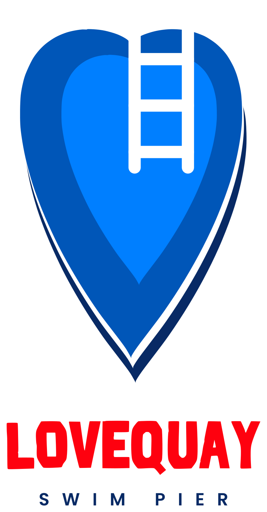
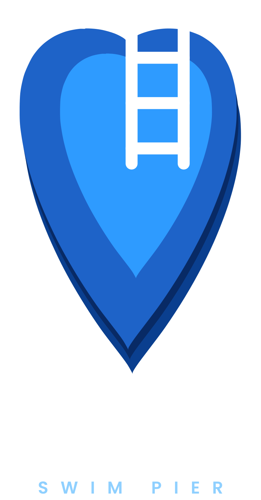
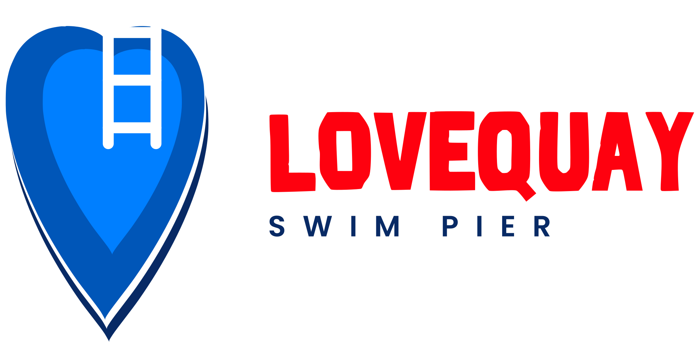
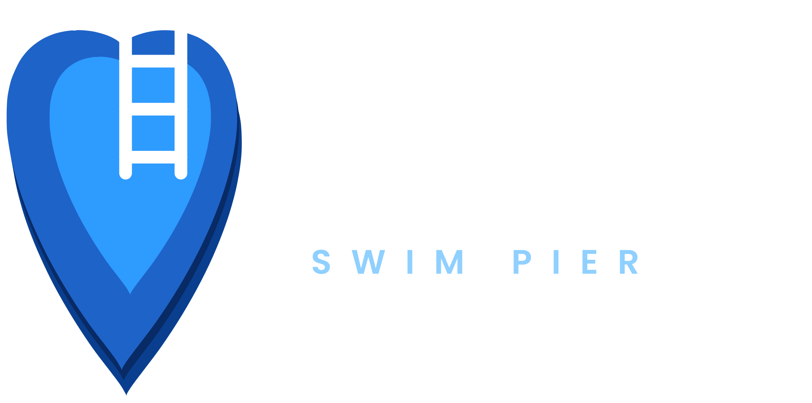
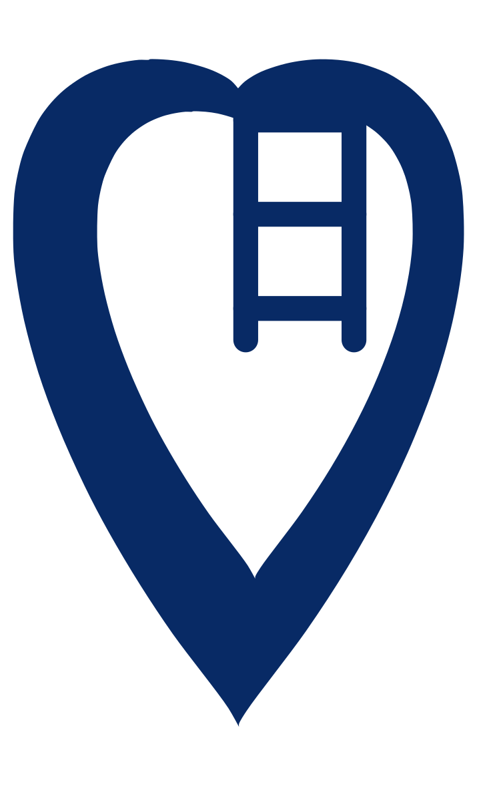
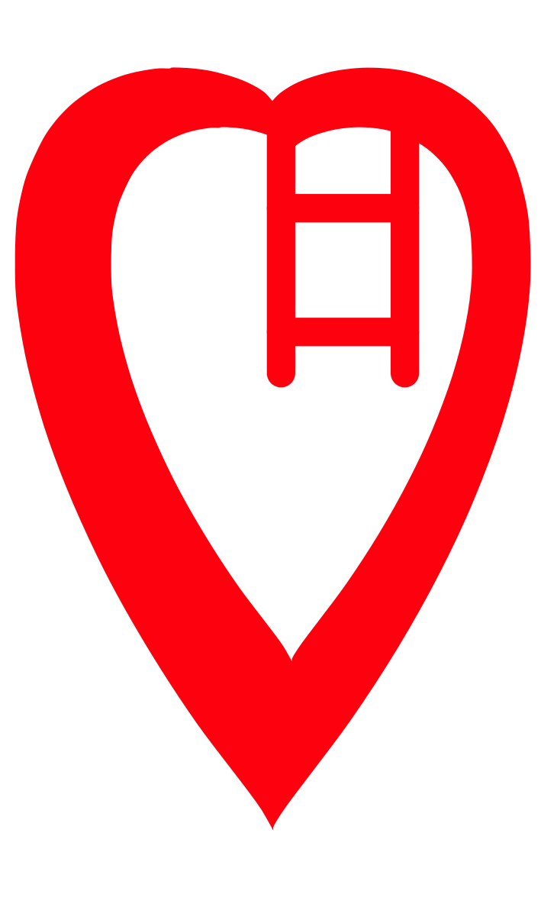

Brand
A heart-shaped pool with a ladder in it.
That has always been the idea. What changed is the heart: it is now traced from the shape on the quay itself, which is a heart and a small boat hull at the same time — the two things that let anyone swim here.
The pool is built from that one silhouette repeated four times — coping, a white gap, the basin wall, the water — with the ladder drawn as strokes over the top. The wordmark is traced from the lettering on the LOVE sign at the east end of the pier. Nothing on this page is set in a font: every curve is an outline, so the files carry no dependencies and cannot reflow.
Anatomy
One shape, four times.
Every layer of the mark is the same traced outline at a different size and offset. That is why it stays coherent at any scale — there is only one curve to get wrong.
The coping
Navy, offset down and to the right. It reads as the edge the pool is cut into, and it is what stops the mark floating. Drawn first, so everything else sits on it.
The gap
A white sliver between coping and basin, about four tenths of the coping offset. It is the smallest part of the mark and the one doing the most work — without it the two blues merge and the layering disappears.
The basin
The wall of the pool. It shows as a rim along the back and left edges because the water inside is set down and to the right of it.
The water and the ladder
The water is the same heart at 70%, small enough that its point clears the basin's taper. Two rails and three rungs stand over the right-hand lobe. The ladder is the one thing that says swim.
Proportion
Widened, on purpose.
The traced shape is tall and narrow — roughly 0.44 : 1. A pool seen from above is not.
The mark widens it by 1.55 ×. That is enough for the ladder to stand in water rather than on top of it, and little enough that the silhouette is still the one on the quay: the long point, the soft shoulders, the shallow cleft.
Do not widen it further to fill a space, and do not narrow it back. The ratio is part of the mark. Use the horizontal or inline lockup instead.
1.55 × · correct
Too narrow
Too wide
Lockups
Three ways to sign something.
Use the stacked lockup wherever there's room. The other two exist because there isn't.

Stacked · primary

Stacked · reversed

Horizontal · wide spaces, footers
Inline · navigation, under 48 px tall

Reversed over photography
Wordmark alone · rare
Colourways
Full colour first. One colour when you must.
In the one-colour versions the water and the ladder are knocked clean through to the paper, so the mark carries no second ink and works on any ground.
Full colour
Two colour · embroidery, screen print

Navy · one colour

White · reversed

Full colour · on navy

Sign red · stamps, stencils
App tile · navy
App tile · white
Clear space & small sizes
Give it room. Then give it an edge.
Keep clear space around the logo equal to the height of the ladder on all four sides. Nothing else goes inside that boundary.
The mark holds down to about 28 px tall. Below that use the tile, which supplies the edge a narrow shape cannot: the navy tile survives 32 px, the white one needs a border to do the same. At 16 px the ladder fills in — that is the floor.
64 px
32 px
16 px
Mark, 64 px
28 px · floor
Misuse
Please don't.
Don't stretch it
Don't recolour it
Don't tilt it
Don't put the colour mark on a busy photo
Palette
Coping, basin, water, sign.
Four colours come straight out of the artwork. The sand is taken from the concrete of the deck, and is the only one that isn't in the mark.
Two reds, and they are not interchangeable
Sign Red is the sign's own colour. It draws the wordmark and nothing else — it is a display colour, and at small sizes it falls below the contrast needed for text. Warning Red is that red darkened until it is readable, and it is the only red allowed on hazard copy. Neither one should ever be the sole carrier of a warning: if the colour matters, the words have to say it too.
Typography
One alphabet that isn't a font.
The wordmark is traced from the LOVE sign's own lettering — hand-cut flat edges, a tall Q with a straight tail, a V and an A that nearly touch. Only the eight letters of LOVEQUAY exist. It is a logo, not a typeface, and it is never used to set anything else.
Poppins and Inter do the rest of the work.
Know your limit
SWIM PIER
The water at the far end is deep and clean enough to go straight in from the wall. That is the whole appeal — and the whole risk.
Voice
Plain, warm, and never breezy about risk.
- Say the useful thing first. “Never swim alone” beats “safety is our top priority.”
- Don't sell the swim. Describe what's there and let people decide. No hype about bravery or cold plunges.
- Never imply supervision. There are no lifeguards, no inspections, and no owner. Any copy that softens that is wrong.
- Warm about the place, blunt about the water. The pier is loveable. The lake is indifferent.
Files
Take what you need.
SVG for anything on a screen or in print. PNG where SVG isn't accepted. All lettering is outlined, so nothing depends on a font being installed.
Every file is regenerated from one script —
tools/build_brand.py — off two traced outlines, the heart and the eight
letters. The geometry cannot drift between files because there is only one copy of it.
To rebuild: python tools/build_brand.py --png